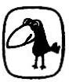

Mary Doria Russell
SERÇE
1950’de Chicago’da doğdu. Kemik biyolojisi ve biomekanik konusunda uzman bir paleoantropolog olarak Avustralya ve Hırvatistan’da araştırmalar yaptı. 1980’lerde akademik kariyerini bırakarak yazarlığa soyundu. Halen eşi Don ve oğulları Daniel ile Cleveland’da yaşamaktadır.
1996 yılında yayımlanan ilk romanı Serçe büyük bir başarı kazandı. Entertainment Weekly yılın en iyi on kitabından biri seçti. 1997’de İngiliz Bilimkurgu Yazarları Kurumu tarafından En İyi Roman ödülüne layık görüldü. Russell yine aynı romanıyla James Tiptree Jr., Arthur Clarke ve John W. Campbell ödüllerinin de aralarında bulunduğu birçok ödül topladı. 1998’de Serçe’nin devamı niteliğindeki Children of God, Tanrı’nın Çocukları’nı yayımladı.
